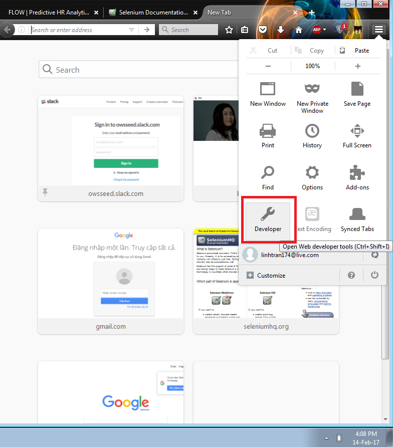
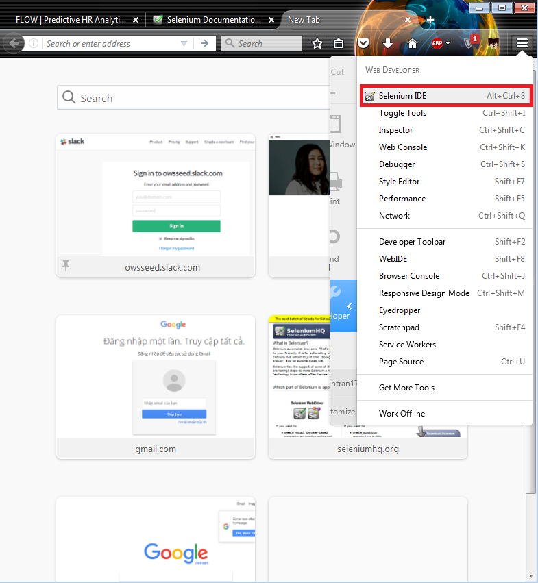
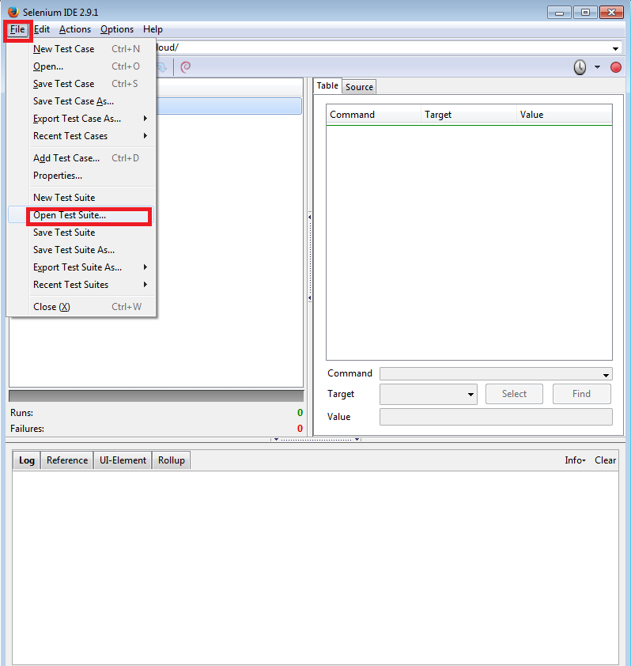
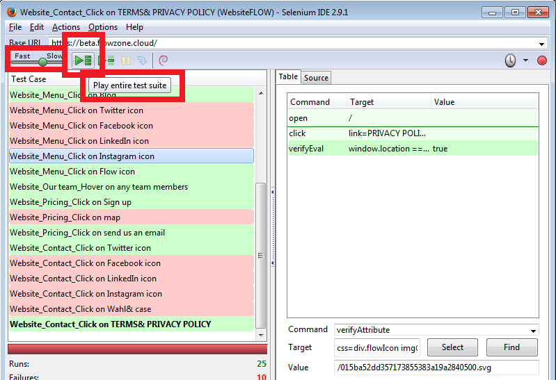
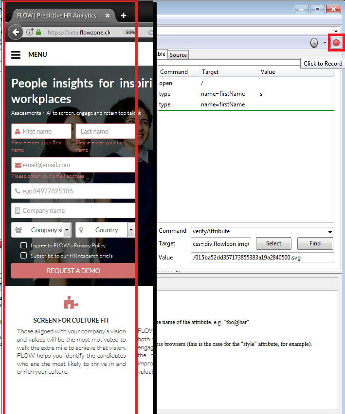

It is NOT always advantageous to automate test cases!! When?
We are going to use SeleniumIDE to test FLOW project website:
First, download SeleniumIDE: here
After that, download the project folder here, and unzip the project folder
Open SeleniumIDE as below:


Then open the test suite, and choose the test suite in this address: \FlowProjectTests_Selenese\Website\WebsiteFLOW

Try modifying the speed and running the test:

First pick one test case from Flow project test-cases specification
Now click the record button from the IDE and perform the actions you are suppose to do. Then click the button again to stop the record.

Selenese is a simplified script that represent automated test cases, and is translatable to other programming languages
Selenium commands consist of three parts: Actions, Accessors, and Assertions